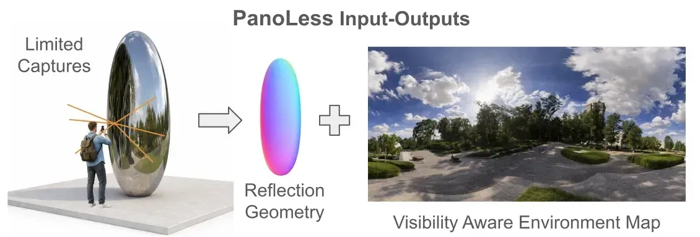
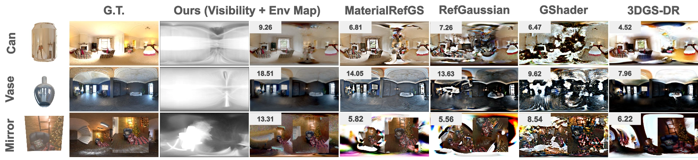
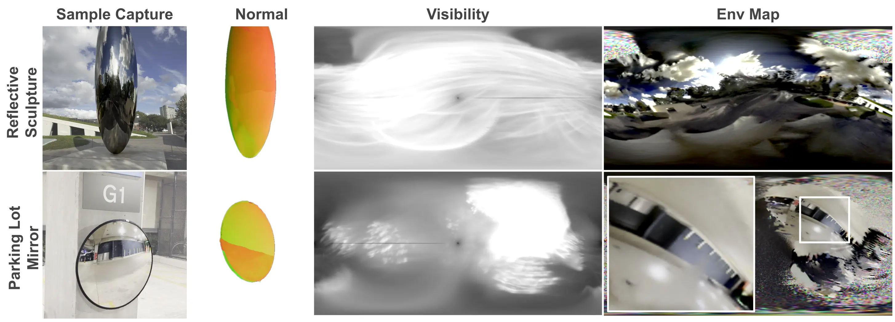
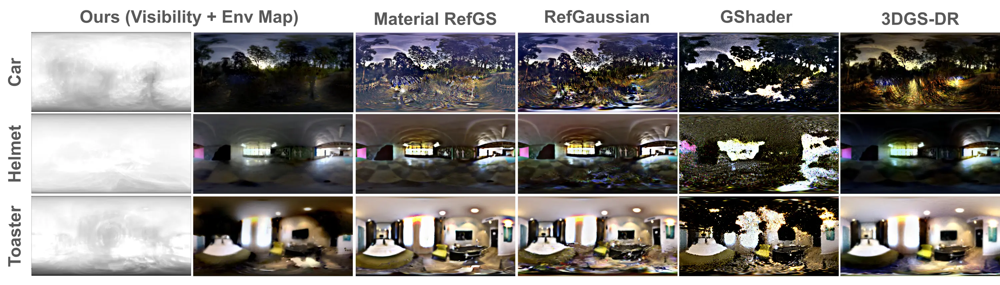
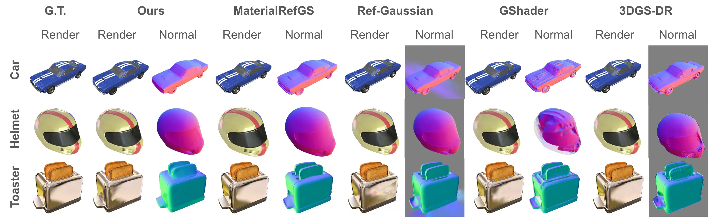
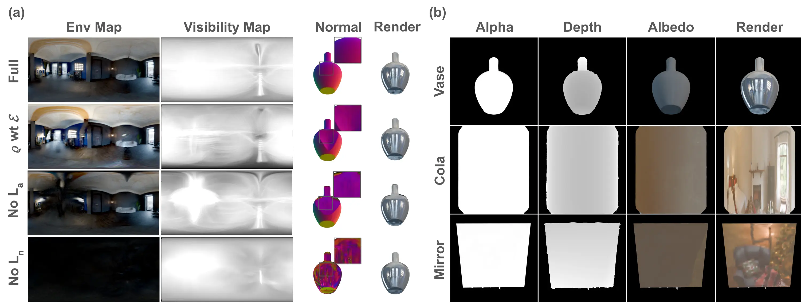
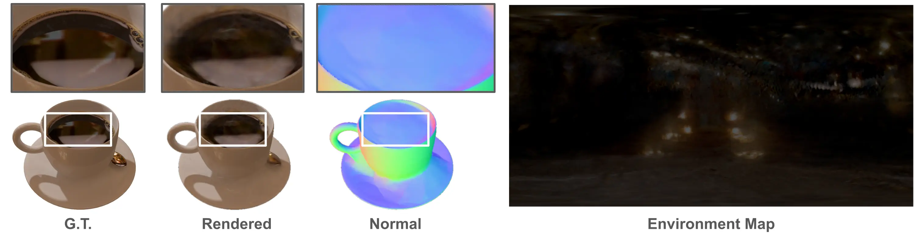
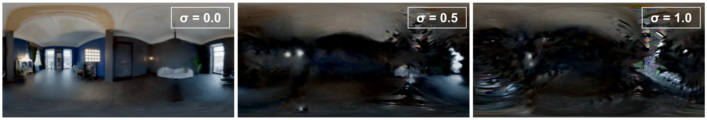

Given multi-view images of a reflective object captured from a single hemisphere, PanoLess recovers the surrounding environment map along with a visibility map that marks which directions are constrained by the observed reflections.
Abstract
Reflections from shiny objects and glass façades naturally extend the field of view of a camera, capturing the surrounding environment without the need to pan the camera or acquire a full panorama. We propose PanoLess, a Gaussian-splat-based framework that reconstructs the environment from images captured on only one side of a reflective surface. PanoLess leverages surface-aligned 2D Gaussian splats with deferred shading to recover accurate per-pixel normals and reflection cues, which are fused into a neural cubemap representation of the environment. In addition, PanoLess produces a visibility map that explicitly denotes which regions of the environment are supported by the partial reflective observations. Unlike existing inverse-rendering and reflection-aware Gaussian-splatting approaches — which typically require full 360° coverage and struggle under incomplete views — PanoLess enables consistent, physically grounded illumination estimation from partial-view input. We show that PanoLess achieves high-fidelity and geometrically consistent environment reconstruction, outperforming reflection-aware baselines on a new custom synthetic benchmark and publicly available datasets, and demonstrating generalization to real-world reflective captures.
Method
PanoLess represents the scene as a set of surface-aligned 2D Gaussian splats, which are rasterized into geometry and albedo buffers via differentiable alpha compositing. Each pixel's specular reflection direction is computed from the rasterized normals and used to index a learnable neural cubemap, whose response is added directly to the diffuse albedo to form the final render. A visibility accumulation pass during training records which cubemap directions receive gradient signal, producing the per-direction visibility map as a byproduct.

Pipeline. 2D Gaussians are rasterized into normal, albedo, depth, and alpha buffers. Reflection directions \(\boldsymbol{\omega}_r = \mathbf{v} - 2(\mathbf{v}\cdot\mathbf{n})\mathbf{n}\) query the neural cubemap \(\mathbf{E}\). The final color \(\mathbf{C} = \mathbf{A} + \mathbf{E}(\boldsymbol{\omega}_r)\) is supervised by the joint loss \(\mathcal{L} = \mathcal{L}_i + \mathcal{L}_n + \mathcal{L}_\alpha\).
Because reflection-direction error scales linearly with normal error, \(\|\delta\boldsymbol{\omega}_r\| \le 4\|\delta\mathbf{n}\|\), accurate surface geometry is the single most important factor for environment recovery. This motivates the normal consistency loss \(\mathcal{L}_n\) as a core training objective.
Results: Shiny Partial Benchmark
We introduce Shiny Partial, a new benchmark for partial-view environment reconstruction with three scenes covering distinct reflector geometries: Cola (highly curved), Vase (moderately curved), and Mirror (planar). Each scene is captured from a single hemisphere of viewpoints, with ground-truth HDR environment maps provided for evaluation. PanoLess achieves roughly 5 dB higher environment-map PSNR than the best competing baseline across all three scenes.

Recovered environment maps on Shiny Partial (Cola, Vase, Mirror). PanoLess reconstructs recognizable room structure, light sources, and color gradients. Baselines produce washed-out or incoherent results regardless of reflector curvature.
| Method | Environment Map | Novel-View Render | |||||
|---|---|---|---|---|---|---|---|
| PSNR ↑ | SSIM ↑ | LPIPS ↓ | L1 ↓ | PSNR ↑ | SSIM ↑ | LPIPS ↓ | |
| GaussianShader | 12.14 | 0.458 | 0.543 | 0.198 | 25.32 | 0.877 | 0.141 |
| GS-IR | 11.09 | 0.419 | 0.571 | 0.219 | 26.14 | 0.882 | 0.136 |
| Ref-Gaussian | 10.77 | 0.384 | 0.587 | 0.235 | 25.91 | 0.864 | 0.152 |
| PanoLess (Ours) | 17.54 | 0.601 | 0.474 | 0.098 | 35.42 | 0.978 | 0.031 |
Results: Real-World Captures
We capture two scenes in the wild: a chrome sculpture and a convex safety mirror, each filmed handheld from a single side. Camera poses come from COLMAP and no fine-tuning or domain adaptation is applied.

PanoLess recovers recognizable illumination structure — sky gradients, nearby buildings, overhead lights — from partial-view handheld footage without any synthetic supervision.
Generalization: Partial Shiny Blender
We test generalization on Partial Shiny Blender, single-hemisphere subsets of the Shiny Blender dataset (Car, Teapot, Coffee, Helmet, Toaster). These scenes have mixed diffuse and specular materials, outside PanoLess's primary design assumptions, making them a meaningful test of how far the approach transfers.

Recovered environment maps.

Novel-view renders.
Ablation Study
We ablate on the Vase scene. The normal consistency loss \(\mathcal{L}_n\) has by far the largest impact: removing it drops envmap PSNR from 18.51 to 8.68 dB and collapses SSIM to 0.098. Roughness-attenuating the cubemap lookup costs 4.6 dB, and removing the silhouette loss \(\mathcal{L}_\alpha\) costs 5.6 dB.

(a) Per-component ablation on Vase. (b) Output decomposition on all three Shiny Partial scenes: near-binary alpha masks and near-uniform albedo maps confirm the cubemap absorbs the dominant appearance signal.
| Variant | Environment Map | Novel-View Render | ||||||
|---|---|---|---|---|---|---|---|---|
| PSNR ↑ | SSIM ↑ | LPIPS ↓ | L1 ↓ | PSNR ↑ | SSIM ↑ | LPIPS ↓ | L1 ↓ | |
| Full model (Ours) | 18.51 | 0.635 | 0.487 | 0.082 | 38.56 | 0.988 | 0.022 | 0.002 |
| \(\rho\)-weighted \(\mathbf{E}\) | 13.94 | 0.569 | 0.546 | 0.146 | 36.16 | 0.982 | 0.036 | 0.003 |
| w/o \(\mathcal{L}_\alpha\) | 12.91 | 0.466 | 0.559 | 0.177 | 33.75 | 0.977 | 0.045 | 0.004 |
| w/o \(\mathcal{L}_n\) | 8.68 | 0.098 | 0.621 | 0.337 | 35.82 | 0.978 | 0.042 | 0.004 |
Limitations
PanoLess is designed for highly specular surfaces. On diffuse or rough objects, the gradient path from the image loss to the cubemap weakens, and the albedo absorbs appearance that should instead train the environment map. The method is also sensitive to camera pose accuracy: a perturbation of just 0.5° is enough to drop envmap PSNR by roughly 6 dB, consistent with the linear sensitivity of reflection directions to normal errors, \(\|\delta\boldsymbol{\omega}_r\| \le 4\|\delta\mathbf{n}\|\).

Failure case on a diffuse surface (coffee cup).

Envmap PSNR as a function of pose perturbation \(\sigma\).
| \(\sigma\) (°) | PSNR ↑ | SSIM ↑ | LPIPS ↓ | L1 ↓ |
|---|---|---|---|---|
| 0.0 | 18.41 | 0.637 | 0.490 | 0.083 |
| 0.5 | 12.04 | 0.341 | 0.599 | 0.218 |
| 1.0 | 11.71 | 0.319 | 0.616 | 0.224 |